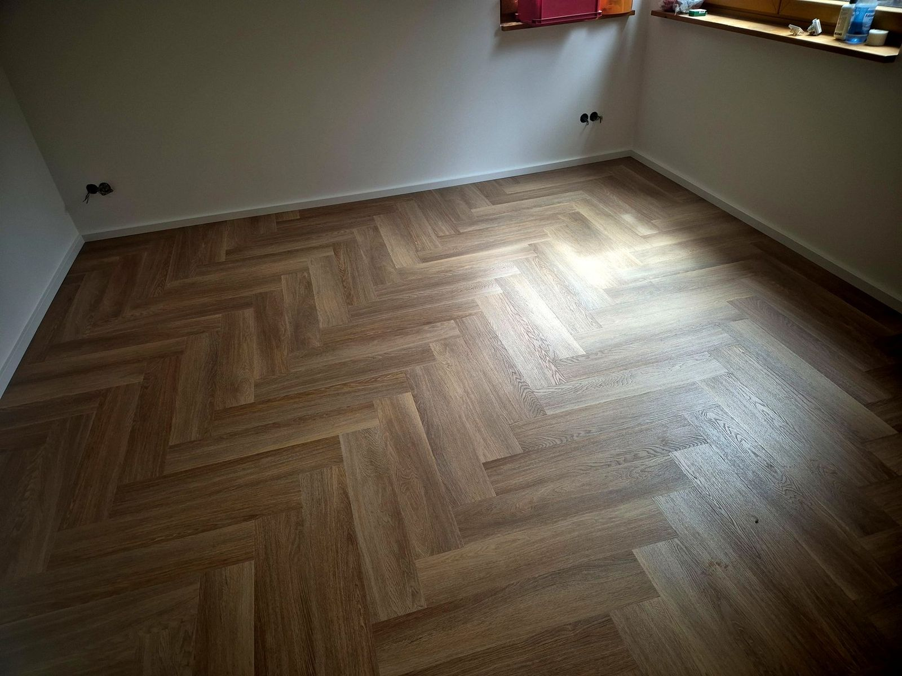
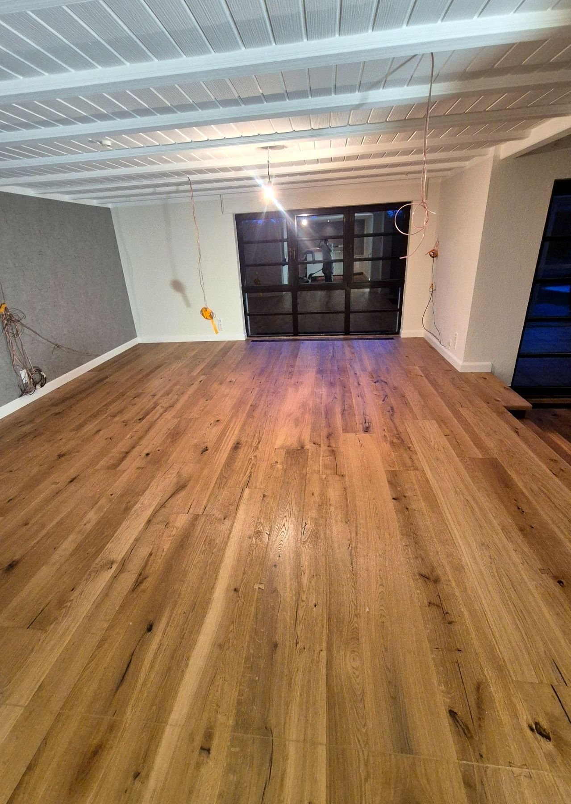
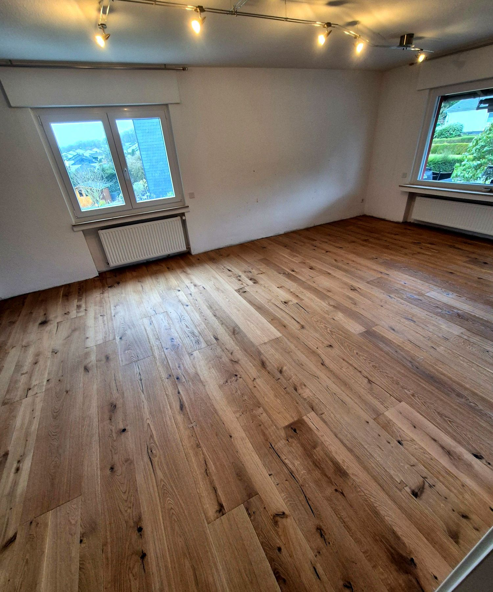
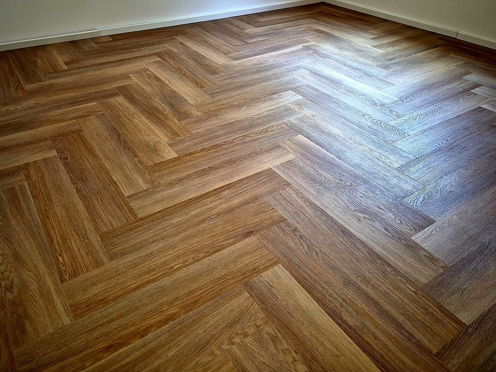

Projekte vom Bodenleger in Wermelskirchen
Holzböden, Fischgrät, Treppen und Bäder: Die Fotos auf dieser Seite zeigen Böden, die unser Team verlegt hat.

Vom Flur bis ins Dachgeschoss, aus Wohnhäusern und Wohnungen der Region. Und weiter unten sehen Sie, was vor dem Verlegen unter dem Boden passiert.
Einmal durchs ganze Haus
Vom Flur bis ins Bad: Böden aus verschiedenen Projekten, Raum für Raum hintereinander.






Alle Böden, sortiert nach Art
Filtern Sie nach Bodenart. Ein Klick vergrößert das Foto, mit den Pfeiltasten oder per Wischen blättern Sie weiter.



Alle Fotos zeigen Böden aus unseren Projekten.
Alle Leistungen ansehen

Erst der Grund, dann der Boden
Links ein vorbereiteter Estrich, geschliffen und gespachtelt. Rechts ein fertig verlegter Boden.
Was dazwischen passiert, sieht später niemand. Man spürt es aber bei jedem Schritt.
- Untergrund prüfen
- Alte Beläge entfernen
- Schleifen und fräsen
- Grundieren
- Spachteln und nivellieren
Regler ziehen oder Pfeiltasten nutzen. Beispielbilder aus zwei Projekten.
Mehr zur UntergrundvorbereitungMehr auf Instagram
Weitere Fotos aus unserer Arbeit finden Sie auf unserem Instagram-Kanal.


Ihr Boden als nächstes Projekt
Ein paar Fotos und die ungefähre Fläche genügen für den Anfang. Wir melden uns und vereinbaren einen Termin für Beratung und Aufmaß.